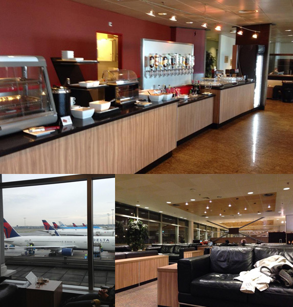

STUDY ABROAD
Norwich, Great Britain
Norwich, Great Britain
Upon completion of my pre-departure registration I received an email giving an overwhelming set of information. It explains other registration information, states visa support, gives Code of Practice links and goes on about voting in the UK. To be honest, I haven’t read through the whole email because of its size and nature. It is definitely reading material for the flight over.
Around the same time I received a successful registration email I also was sent an email which had a Facebook Group link specific to the accommodation I was staying in. It helps you get to know others from your building before you actually get there and see who your flatmates are. You can also ask me questions about the residence and pass on any information that you may have about life at the UEA or in Norwich that you think could be useful to your new housemates.
Since I have a three hour layover in Amsterdam before I connect to Norwich I’ve decided to purchase an airport lounge pass at the Menzies Executive lounge for $30. The Menzies lounge is a quite, reserved, area airside that includes breakfast, drinks, WIFI and comfy seating. I found that it was cheaper to buy through Expedia.
It is also worth mentioning that EU airports are divided into Schengen and Non-Schengen terminals or known in Amsterdam as Piers. Schengen flights allow you to travel within designated countries without going through passport control multiple times. Non-Schengen are flights not listed in the Schengen agreement, namely the U.S. and other non EU partners. A complete list of Schengen can be found on the State Travel website
With less than 30 days to go, I received an email from UEA Registration. It contained a link to start the formal registration process. It basically provided me with access to e:Vision, the University's Student Information System, along with Blackboard and Outlook. I was issued a UEA username and was asked to set a password for my username. I also had to upload a photograph, passport-like restrictions, for my UEA Campus Card.
Several people have asked what I am doing in the time before I leave. As of Friday, August 8th, my internship at Paradowski Creative ended. During the summer I worked 30 hours a week. August 8 through 10 I was in Kansas and Kansas City. In the time I have until my next trip at the beginning of September I will be finishing paperwork which includes course details, joint bank account information, power of attorney, financial aid, shopping, working on my portfolio and resume, preparing for my return and other minor formalities. Before I leave for England I will be on South Padre Island, Texas for a week — the first week of September. Finally, the week before my leave date, I will be adjusting to the Norwich time zone, a six hour difference from Central Standard Time. This requires me to go to bed around 2:00 pm (CST) and wake up around 3:00 am (CST). In the little remaining time around this I hope to take in the last bit of summer weather, see friends and relax.
I received an email from the UEA study abroad office which notified me of a scheduling conflict with two of my classes. I now have to submit five more courses for equivalency at UMSL and five more in case of an emergency. It is frustrating to go through course equiv one month prior to leaving but it is better to have the problem now when I can fix it as opposed to running into the problem when I get there.
So far Delta has changed flight times on four of my six flights for this trip. The time difference is only by five or ten minutes so it thankfully doesn't mess with the other flights. If this happens to you and you had purchased all the flights through Delta but they changed the time of a flight that conflicts with another, you will most likely be eligible to change the conflicting flight.